ts.plot(Nile, ylab = expression(Fluxo~em~10^8~m^3) , lwd = 2)
abline(v=1898, lty=2)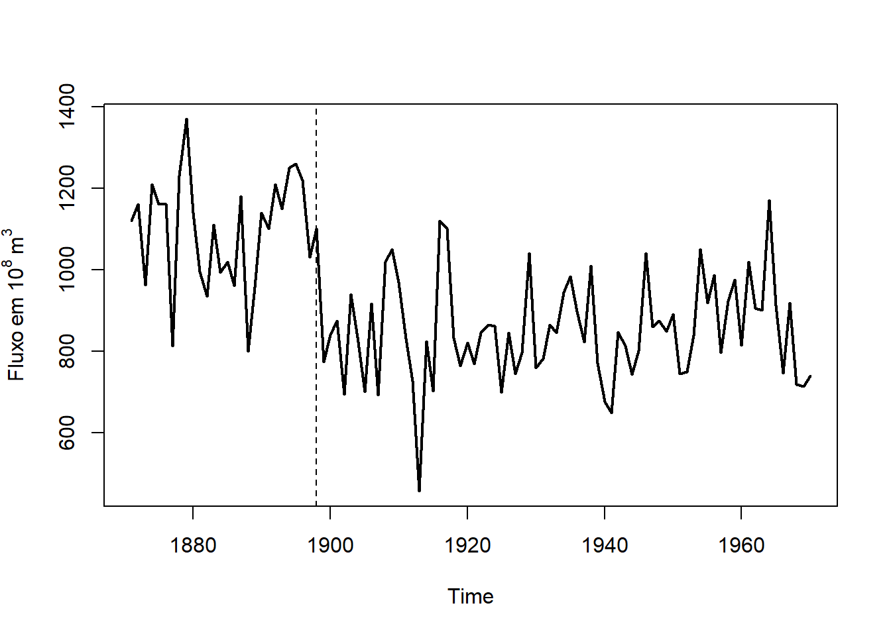
Métodos de suavização exponencial são, em princípio, modelos semi-paramétricos com o objetivo de suavizar o sinal para o tempo \(t\) utilizando toda a amostra \(\mathcal{D}_t\) através de uma média ponderada.
Inicialmente, apenas as ideias originais serão apresentadas, de modo que a lógica por trás dos métodos seja compreendida. Durante essas apresentações, não faremos aplicações.
Por fim, mostraremos que os modelos de suavização exponencial podem ser escritos na forma de modelos de espaço de estados, apresentando sua estrutura e formas de previsão. Em seguida, as aplicações são apresentadas, utilizando o pacote forecast, que apresenta as implementações destes modelos neste formato final.
Considere uma série temporal descrita como
\[x_t=\mu_t+\varepsilon_t,\] onde \(\mu_t\) é a média da série, denominada nível, para o tempo \(t\). Para esse modelo, é assumido que \(\mu_t\) pode oscilar, mas não ao ponto de criar qualquer sinal como uma tendência ou sazonalidade. Para a amostra \(\mathcal{D}_t\), o modelo de suavização exponencial simples propõe estimar \(\mu_t\) por uma média ponderada dos valores passados, dada por
\[\mu_t=\alpha x_t+\sum_{j=1}^{t-1}\alpha(1-\alpha)^jx_{t-j},\] onde \(\alpha\in(0,1)\). A constante \(\alpha\) deve ser grande o suficiente para que os valores passados não tenha tanta influência, mas não tão grande ao ponto de ser influenciada em excesso pelo erro associado à observação \(x_t\).
Observe que
\[\begin{aligned}\mu_t&=\alpha x_t+\alpha\sum_{j=1}^{t-1}(1-\alpha)^jx_{t-j}\\&=\alpha x_t+(1-\alpha)\left[\alpha x_{t-1}+\sum_{j=2}^{t-1}\alpha(1-\alpha)^{j-1}x_{t-j}\right]\\&=\alpha x_t+(1-\alpha)\left[\alpha x_{t-1}+\alpha \sum_{j=1}^{t-2}(1-\alpha)^{j}x_{t-1-j}\right]\\&=\alpha x_t+(1-\alpha)\mu_{t-1}\end{aligned}\]
logo, \(\mu_t\) pode ser obtido de modo recursivo.
O modelo de suavização exponencial segue a seguinte lógica:
Como é esperado que o erro de previsão seja um ruído branco, \(\mu_0\) e \(\alpha\) podem ser estimados minimizando numericamente \[\sum_{t=1}^n e_t^2.\]
Para esse modelo a previsão \(f_t=E(x_t|\mathcal{D}_{t-1})\) é dada pelo último nível estimado no tempo \(t-1\), ou seja \(\mu_{t-1}\). Portanto, a equação recursiva pode ser pensada como a combinação linear convexa de duas fontes de informação, uma proveniente da amostra no tempo \(t\) e outra disponível no tempo \(t-1\):
\[\mu_t=\alpha\underbrace{x_t}_{\text{informação\\da amostra\\no tempo }t}+(1-\alpha)\underbrace{\mu_{t-1}}_{\substack{\text{estimativa para }}\mu_t\text{\\disponível no \\tempo }t-1}\] Essa composição da estimativa através da combinação de duas fontes de informação é útil para entender os próximos modelos.
Considere agora um modelo da forma \[x_t = \mu_t + \varepsilon_t,\] onde \(\mu_t\) é o nível e \(\varepsilon_t\) o ruído branco. Adicionalmente, considere que o modelo possui tendência. Uma função de previsão razoável para este problema é
\[f_t(h)=E(x_{t+h}|\mathcal{D}_t)=\mu_t+h\xi_t,\] onde \(\xi_t\) é o parâmetro de tendência. Ele recebe esse nome porque, quando nulo, o modelo é livre de tendência. Além disso, dependendo do seu sinal, a tendência será crescente ou decrescente.
Temos duas fontes de informação sobre \(\mu_t\):
A própria amostra, pois \(x_t\) oscila em torno de \(\mu_t\)
A previsão para \(x_t\) no tempo \(t-1\), dada por \(f_{t-1}(1)=\mu_{t-1}+\xi_{t-1}\) e que, por sua vez, é uma previsão para \(\mu_t\).
Deste modo, assim como visto no modelo de suavização exponencial, temos que \(\mu_t\) pode ser obtido a partir da seguinte recursão
\[\begin{aligned*} \mu_t &= \alpha x_t + (1-\alpha)\left( \mu_{t-1} + \xi_{t-1}\right). \end{aligned*}\]
Observe que a recursão só pode ser utilizada se \(\xi_t\) for conhecido para todo \(t\). Para construir uma recursão para \(\xi_t\), vamos assumir que \(\xi_t\) é a ponderação de duas fontes de informação sobre \(\xi_{t-1}\):
Para o tempo \(t\), sabemos que \(x_t\) é estimativa para \(\mu_t\). Por sua vez, \(\mu_t\approx f_{t-1}(1)=\mu_{t-1}+\xi_{t-1}\). Portanto, \(\mu_t-\mu_{t-1}\) é uma estimativa para \(\xi_{t-1}\)
Vamos assumir que a inclinação \(\xi_t\) oscila pouco, o que implica que \(\xi_t\approx \xi_{t-1}\)
Com isso, teremos a seguinte recursão geral para a componentes de nível e tendência
\[\begin{aligned} \mu_t &= \alpha x_t + (1-\alpha)\left( \mu_{t-1} + \xi_{t-1}\right) \\ \xi_t &= \beta (\mu_t - \mu_{t-1}) + (1-\beta)\xi_{t-1}. \end{aligned}\] com \(\beta\in(0,1)\). Mais uma vez, os valores para \(\xi_0,\mu_0,\alpha\) e \(\beta\) podem ser obtidos minimizando a soma de quadrados dos erros de previsão.
Considere o modelo \[x_t = \mu_t+s_t+\varepsilon_t,\] onde \(\mu_t\) é o nível da série e \(s_t\) um fator sazonal de período \(p\). Considere ainda que a série possui tendência, localmente linear, gerando uma equação de previsão do tipo
\[f_t(h)=\mu_t+h\xi_t+s_{t+h-p}.\]
Para obter estimativas para essas componentes, vamos manter o mesmo princípio de unir fontes de informação através de combinações lineares.
Para obter uma equação recursiva para \(\mu_t\), observe que
Para o tempo \(t\), como \(x_t\) é estimativa para \(\mu_t+s_t\), temos que \(x_t-s_t\approx \mu_t\). Entretanto, como \(s_t\) não está disponível ainda, utilizamos \[x_t-s_{t-p}\approx \mu_t.\]
No tempo \(t-1\), temos que a previsão de \(x_t\) é dada por \[f_{t-1}(1)=\mu_{t-1}+\xi_{t-1}+s_t.\] Como \(x_t\) é estimativa para \(\mu_t+s_t\), teremos
\[\mu_t+s_t\approx\mu_{t-1}+\xi_{t-1}+s_t\Rightarrow\mu_t\approx \mu_{t-1}+\xi_{t-1}\]
Desse modo, podemos construir a seguinte equação recursiva
\[\mu_t=\alpha(x_t-s_{t-p})+(1-\alpha)(\mu_{t-1}+\xi_{t-1})\] com \(\alpha\in(0,1)\).
Uma vez que temos o valor suavizado do nível, podemos suavizar a tendência exatamente como foi feito no modelo de Holt: \[\xi_t =\beta (\mu_t - \mu_{t-1})+ (1-\beta) \xi_{t-1}.\]
Vamos agora reunir duas fontes de informação sobre a componente sazonal.
Podemos descontar o sinal de tendência da série, obtendo assim informações sobre a sazonalidade: \[x_t - \mu_t\approx s_t.\]
Vamos considerar que a componente sazonal é razoavelmente estável, ou seja \(s_{t-p}\approx s_t\) (ou seja, uma oscilação de nível).
Portanto, obtemos a seguinte recursão
\[\begin{aligned} s_t = \gamma (x_t - \mu_t) + (1-\gamma) s_{t-p}, \end{aligned}\] com \(\gamma\in(0,1)\).
O modelo de Holt-Winters é dado por \[\begin{aligned} \mu_t &=\alpha (x_t - s_t) + (1-\alpha) (\mu_{t-1}+ \xi_{t-1}) \\ \xi_t &= \beta (\mu_t - \mu_{t-1}) + (1-\beta) \xi_{t-1} ,\\ s_t &= \gamma (x_t - \mu_t) + (1-\gamma) s_{t-p}. \end{aligned}\]
Novamente, os parâmetros \(\alpha,\beta,\gamma,\mu_0,\xi_0,s_{-p+1},\ldots,s_0\) podem ser obtidos via minimização da soma de quadrados dos erros de previsão.
O modelo de espaço de estados com inovações é dado por
\[\begin{aligned}x_t&=F'\theta_{t-1}+e_t\\ \theta_t&= G\theta_{t-1}+\psi e_t \end{aligned}\]
onde \(F\) e \(G\) são matrizes de dimensões condizentes e \(e_t\) é a única fonte de erro (ou inovação). Observe que, dado \(\mathcal{D}_t\), temos as seguintes equações para previsão:
\[\begin{aligned} x_{t+1}&=F'\theta_{t}+e_{t+1}\\ x_{t+2}&=F'\theta_{t+1}+e_{t+2}=F'G\theta_t+F'\psi e_{t+1} + e_{t+2}\\ &=\cdots\\ x_{t+h}&=F'G^{h-1}\theta_t+\sum_{j=1}^{h-1}F'G^{j-1}\psi e_{t+h-j}+e_{t+h} \end{aligned}\] e, sob a restrição de que \(e_t\) é um ruído branco, temos que
\[x_{t+h}|\mathcal{D}_t\sim\hbox{Normal}(f_t(h),Q_t(h)),\] onde \[\begin{aligned}f_t(h)&=F'G^{h-1}\theta_t\\ Q_t(h)&=\nu\left[1+\sum_{j=1}^{h-1}(F'G^{j-1}\psi)^2\right] \end{aligned}\]
Tanto \(\psi\) quanto os eventuais parâmetros em \(F\) e \(G\) podem ser estimados via método dos mínimos quadrados, minimizando \[\sum_{t=1}^ne_t^2,\] ou ainda, maximizando \[\prod_{t=1}^n f(x_t|\mathcal{D}_{t-1})\]
Para o modelo de suavização exponencial, seja \(\theta_t=\mu_t\). Como
\[f_t=\theta_{t-1},\] teremos que \(x_t=f_t+e_t\). Além disso,
\[\begin{aligned}\theta_t&=(1-\alpha)\theta_{t-1}+\alpha x_t\\&=\theta_{t-1}+\alpha e_t\end{aligned}\] onde \(\alpha\in(0,1)\). Portanto, esse modelo pode ser escrito na seguinte forma de espaço estado: \[\begin{aligned} x_t&=\theta_{t-1}+e_t\\ \theta_{t}&=\theta_{t-1}+\alpha e_t \end{aligned}\] logo, identificando \(F=1, G=1,\psi=\alpha\), teremos que
\[\begin{aligned}f_{t}(h)&=\mu_t\\ Q_t(h)&=\nu[1+\alpha^2(h-1)]\end{aligned}\] :::{#exem-}
Considere a série Nile, cujos valores representam o fluxo anual do rio Nilo entre 1871 e 1970. Note que a série aparenta oscilar em torno de dois níveis, separados pelo ano de 1898.
ts.plot(Nile, ylab = expression(Fluxo~em~10^8~m^3) , lwd = 2)
abline(v=1898, lty=2)
Vamos utilizar a função ets(y, model), do pacote forecast, onde y é a série temporal e model='ANN' representa o modelo de suavização exponencial.
require(forecast)Carregando pacotes exigidos: forecastRegistered S3 method overwritten by 'quantmod':
method from
as.zoo.data.frame zoo mod <- ets(Nile, 'ANN')
modETS(A,N,N)
Call:
ets(y = Nile, model = "ANN")
Smoothing parameters:
alpha = 0.2455
Initial states:
l = 1110.6869
sigma: 144.2318
AIC AICc BIC
1458.781 1459.031 1466.597 Acima podemos ver as estimativas dos parâmetros: \(\hat{\alpha}=0.2455\), \(\hat{\theta}_0=1110.6869\) e \(\nu=144.2318^2\).
Como de costume, devemos verificar se existem evidências para assumir que o modelo é adequado analisando os resíduos, que podem ser acessados no item $residuals.
res <- mod$residuals
ts.plot(res)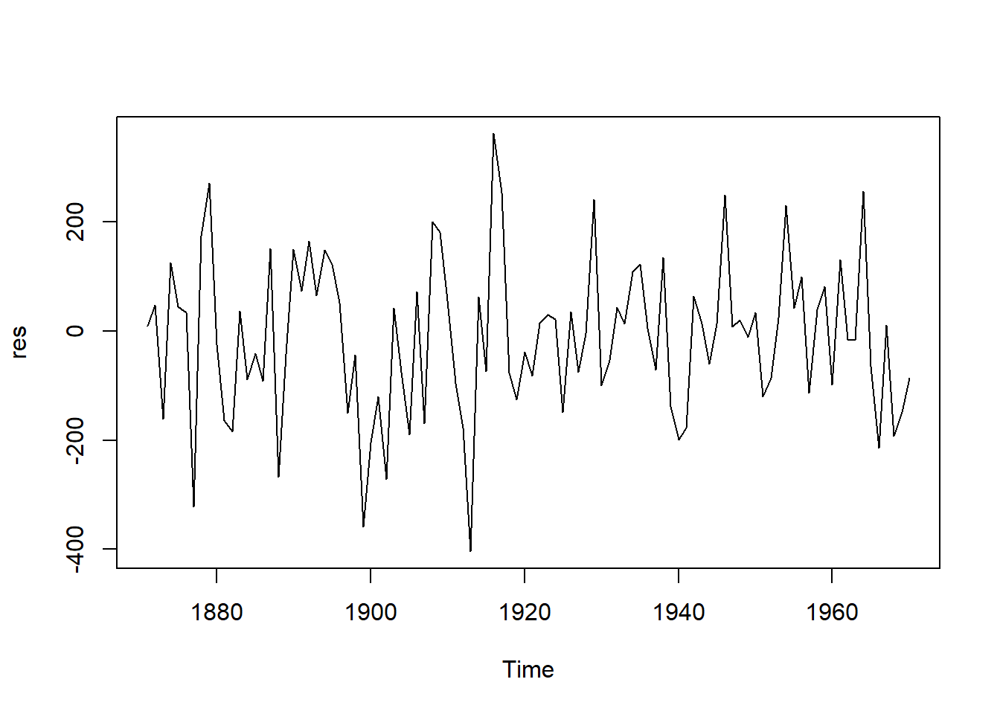
acf(res)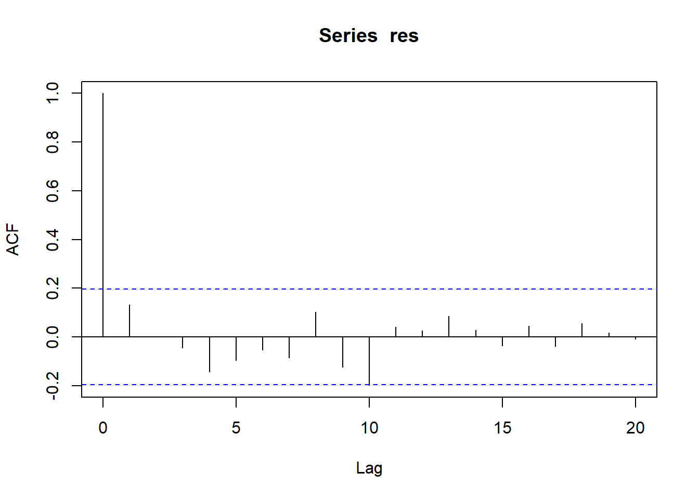
shapiro.test(res)
Shapiro-Wilk normality test
data: res
W = 0.99304, p-value = 0.8902Box.test(res)
Box-Pierce test
data: res
X-squared = 1.7244, df = 1, p-value = 0.1891Os resíduos oscilam em torno de zero e o correlograma não mostra evidências contra a hipótese de ruído branco. O teste Shapiro-Wilk não rejeita a normalidade e o de Box-Pierce não rejeita a hipótese de ruído branco. Portanto, vamos considerar que o modelo é adequado.
Os valores estimados para \(\theta_1,\ldots,\theta_n\) podem ser acessados na lista $states, conforme vemos abaixo.
ts.plot(Nile, ylab = expression(Fluxo~em~10^8~m^3) , lwd = 2)
lines(mod$states, col ='tomato', lwd = 3)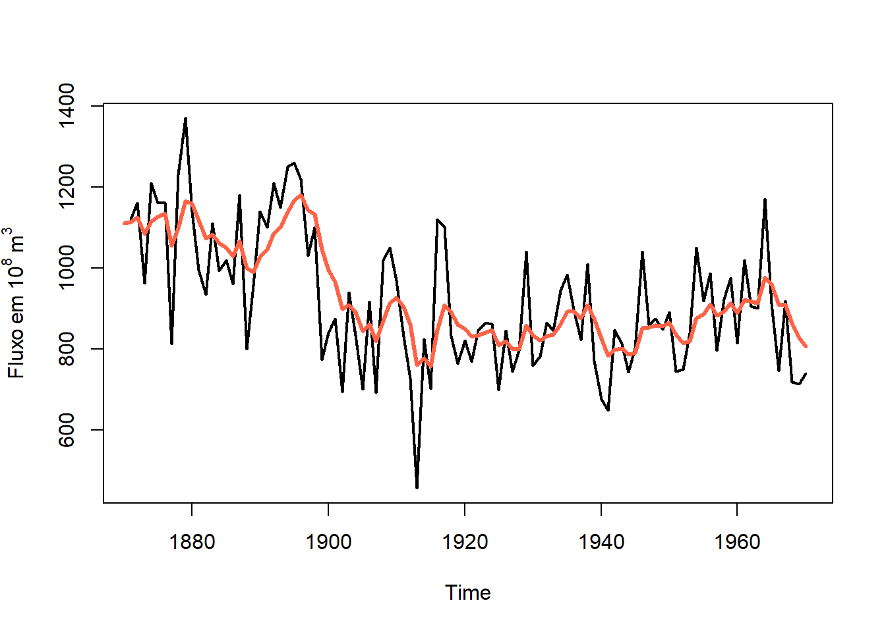
Por último, podemos realizar previsões com a função forecast conforme ilustramos abaixo para os 5 anos à frente (observe que a previsão é constante, mas, como esperado, sua variância aumenta linearmente ao longo do tempo).
plot( forecast(mod, 5))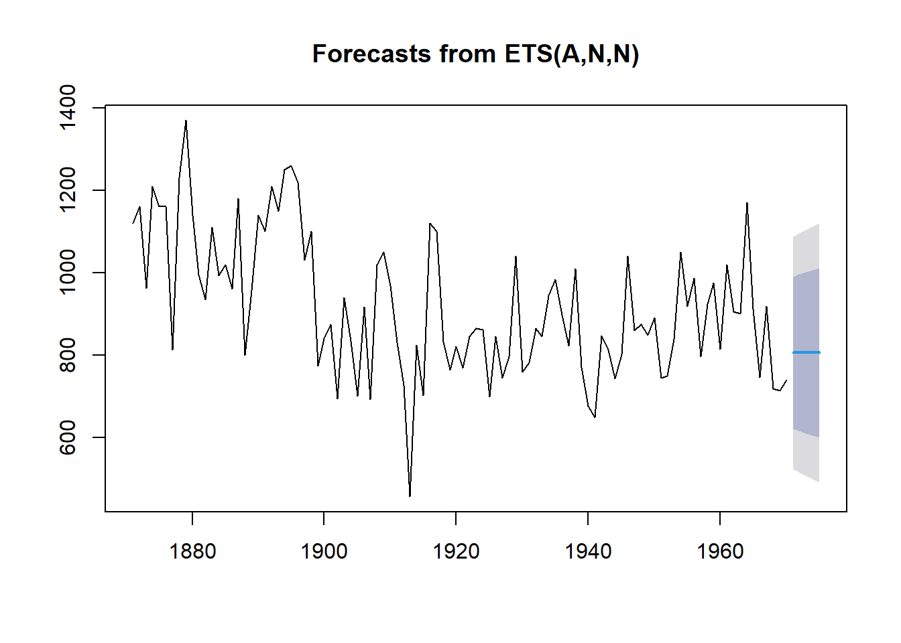
:::
O conjunto de equações acima pode ser reescrito como \[\begin{aligned*}
\mu_t &= \mu_{t-1} + \xi_{t-1}+\alpha\left( x_t-\mu_{t-1} - \xi_{t-1}\right)\\&= \tilde{\mu}_{t-1} + \xi_{t-1}+\alpha e_t\\
\xi_t &= \xi_{t-1}+\beta (\mu_t - \mu_{t-1}-\xi_{t-1}).
\end{aligned*}\]
A partir da primeira equação acima, deduzimos que \(\mu_t-\mu_{t-1}-\xi_{t-1}=\alpha e_t\). Substituindo essa informação na segunda equação teremos \[\begin{aligned*}
\mu_t &= \mu_{t-1} + \xi_{t-1}+\alpha e_t\\
\xi_t &= \xi_{t-1}+\alpha\beta e_t.
\end{aligned*}\]
ou, em forma matricial, \[\left(\begin{array}{c}\mu_t\\ \xi_t\end{array}\right)=\left(\begin{array}{cc}1 & 1 \\ 0 & 1\end{array}\right)\left(\begin{array}{c}\mu_{t-1}\\ \xi_{t-1}\end{array}\right)+\left(\begin{array}{c}\alpha\\ \alpha\beta\end{array}\right)e_t,\]
Note ainda que é possível escrever a equação das observações do modelo em forma matricial: \[x_{t+h}=\mu_{t+h-1}+\xi_{t+h-1}+e_{t+h-1}=(\begin{array}{cc}1&1\end{array})\left(\begin{array}{c}\mu_{t+h-1}\\ \xi_{t+h-1}\end{array}\right)+e_{t+h}\] Pode-se então mostrar que este modelo possui a seguinte especificação como modelo de espaço estado:
\[\begin{aligned} F'&=(1\;\; 1)\\ G&=\left(\begin{array}{cc} 1 & 1 \\ 0 & 1\\ \end{array}\right)\\ \theta_t'&=(\mu_t\;\;\xi_t)\\ \psi'&=(\alpha\;\;\alpha\beta) \end{aligned}\]
Desse modo, os parâmetros \(\alpha,\beta,\tilde{\mu}_0\) e \(\tilde{b}_0\) podem ser obtidos via método de estimação da máxima verossimilhança. Logo, a distribuição da previsão com horizonte \(h\) é dada por
\[x_{t+h}|\mathcal{D}_t\sim\hbox{Normal}\left(\mu_t+h\xi_t, \nu\sigma^2_h\right),\] onde \[\sigma^2_h = 1+(h-1)\left(\alpha^2 + \alpha\beta h + \frac{\beta^2}{6}h(2h-1)\right).\]
Abaixo, temos a série do número mensal de homicídios, obtida através do SUS, em Manaus, començando em Janeiro de 1996.
url <- 'https://docs.google.com/spreadsheets/d/1NxxKFzTH7TBd3xP9r5qvggHeorJeR5xKIhn_UZwBol0/edit?usp=sharing'
x <- gsheet::gsheet2tbl(url)
hom <- ts( x$No, start = c(1996,1), frequency=12)
ts.plot(hom, lwd = 2, xlab = 'Ano', ylab = 'No. homicídios')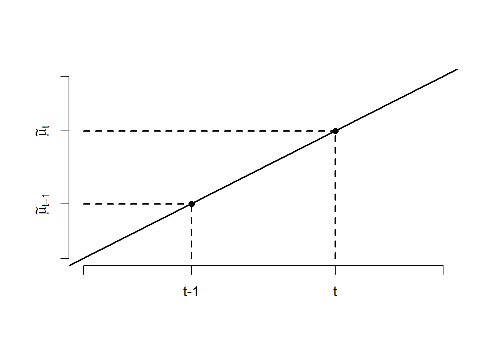
Vamos utilizar a função ets(y, model), do pacote forecast, onde y é a série temporal e model='AAN' representa o modelo de suavização exponencial de Holt. Vamos adicionar o argumento damped=FALSE - estudaremos esse argumento na seção sobre amortecimento.
require(forecast)
mod <- ets(hom, 'AAN', damped = FALSE)
modETS(A,A,N)
Call:
ets(y = hom, model = "AAN", damped = FALSE)
Smoothing parameters:
alpha = 0.3155
beta = 1e-04
Initial states:
l = 41.8223
b = 0.3698
sigma: 14.4539
AIC AICc BIC
3609.723 3609.911 3628.626 Acima podemos ver as estimativas dos parâmetros: \(\hat{\alpha}=0.3155\), \(\hat{\beta}=0,0001\), \(\mu_0=41,8\), \(\tilde{b}_0=0,369\) e \(\nu=14,45^2\).
Como de costume, devemos verificar se existem evidências para assumir que o modelo é adequado analisando os resíduos, que podem ser acessados no item $residuals.
res <- mod$residuals
ts.plot(res)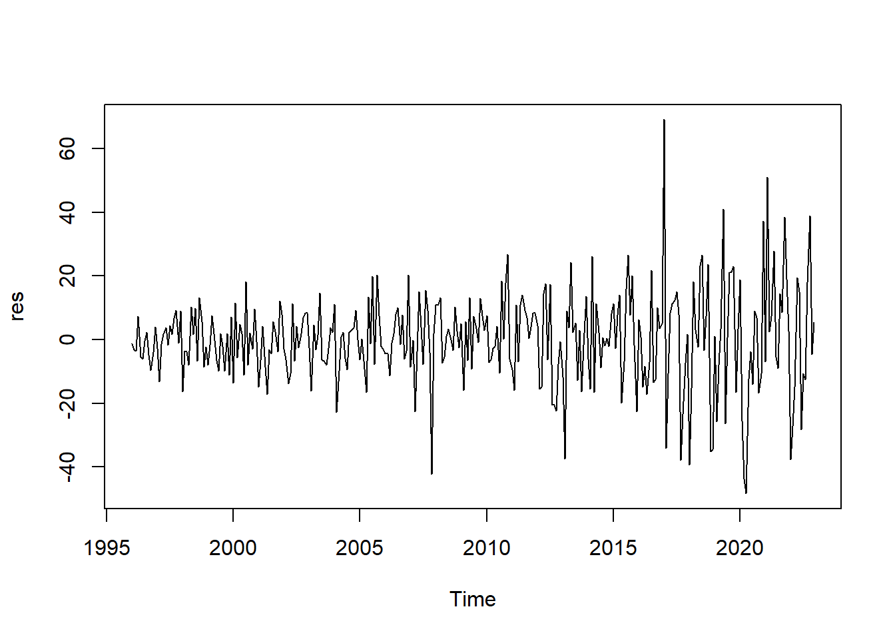
acf(res)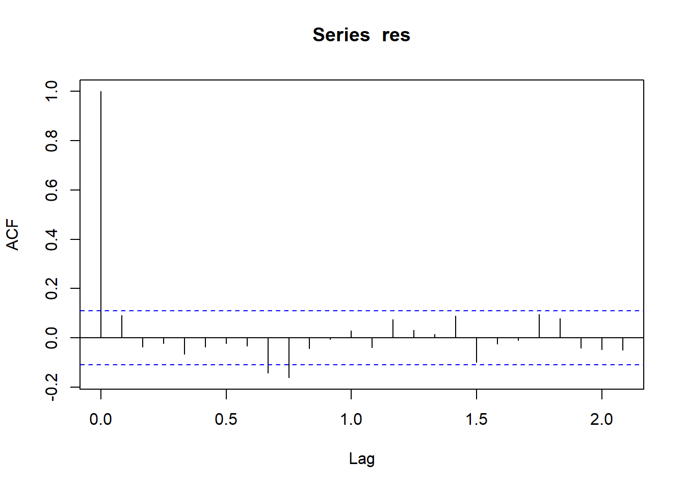
shapiro.test(res)
Shapiro-Wilk normality test
data: res
W = 0.9652, p-value = 5.27e-07Box.test(res)
Box-Pierce test
data: res
X-squared = 2.6596, df = 1, p-value = 0.1029Os resíduos oscilam em torno de zero, mas com um aumento progressivo da variância. Embora a hipótese de resíduo branco não seja rejeitada, deve-se considerar esse modelo com cautela. Veremos mais sobre comportamentos dinâmicos da variância no capítulo 15.
Os valores suavizados \(\tilde{\mu}_0,\ldots,\tilde{\mu}_t\) podem ser acessados na lista $states, na primeira coluna, conforme vemos abaixo.
ts.plot(hom, ylab = 'No. homicídios mensal' , lwd = 2)
lines(mod$states[,1], col ='tomato', lwd = 3)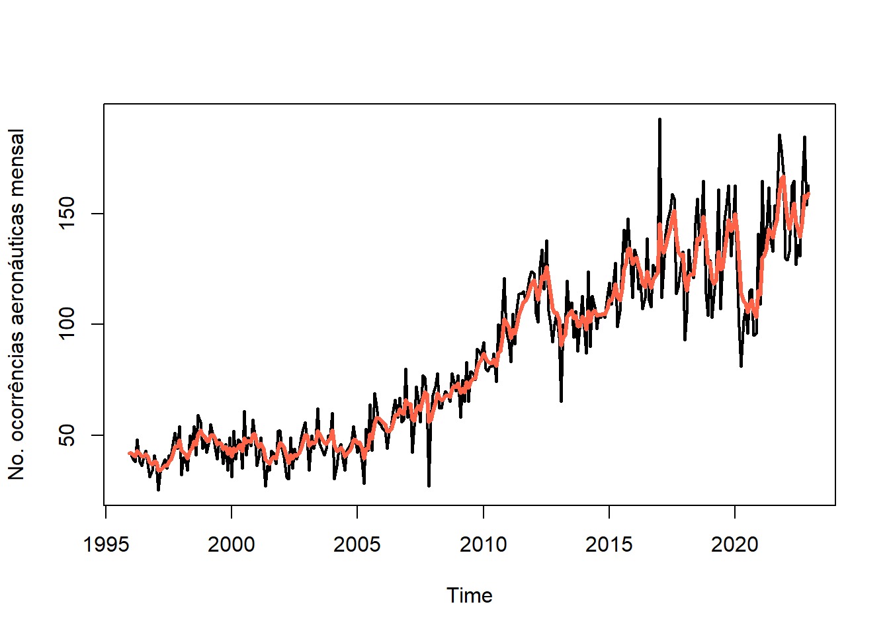
A segunda coluna de $states mostra os valores suavizados para a inclinação.
ts.plot(mod$states[,2], col ='tomato', lwd = 3, ylab = 'Inclinação suavizada')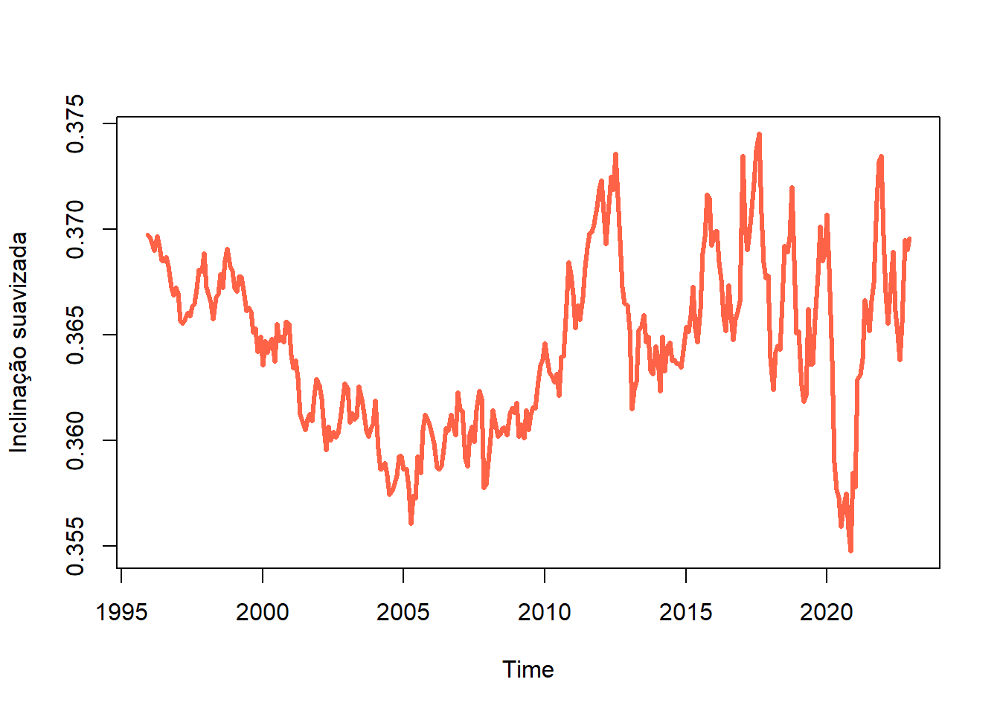
Por último, podemos realizar previsões com a função forecast conforme ilustramos abaixo para os 6 meses à frente, completando o ano de 2023.
prev <- forecast(mod, 6)
plot( prev)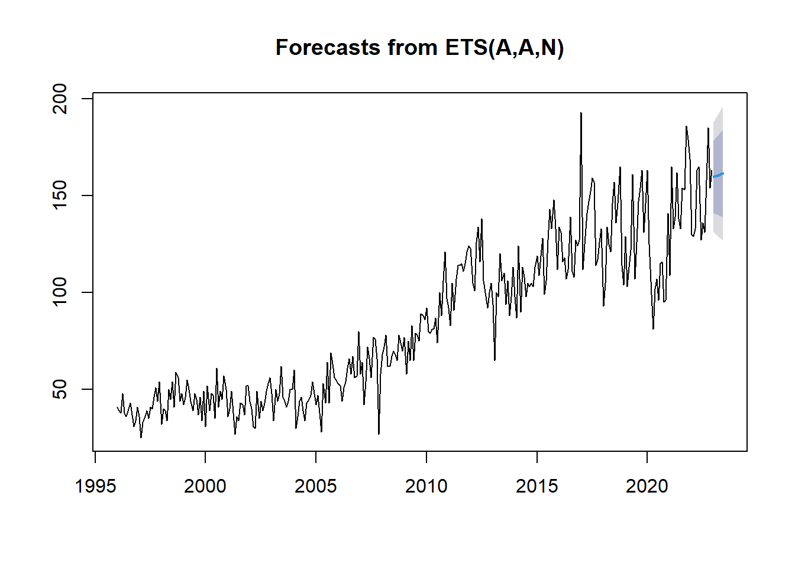
Como esperado, esse modelo pode ser reescrito na forma de espaço de estados, considerando o erro de previsão um passo à frente \(e_t=x_t-f_t\)
As duas primeiras equações de estado são as mesmas do modelo de Holt: \[\left(\begin{array}{c} \mu_t \\ \xi_t\end{array}\right)=\left(\begin{array}{cc}1 & 1 \\ 0 & 1\end{array}\right)\left(\begin{array}{c} \mu_{t-1} \\ \xi_{t-1}\end{array}\right)+\left(\begin{array}{c} \alpha \\ \alpha\beta\end{array}\right)e_t=G_{\hbox{Holt}}\left(\begin{array}{c} \mu_{t-1} \\ \xi_{t-1}\end{array}\right)+\psi_{\hbox{Holt}}e_t\] Já a terceira equação do modelo pode ser escrita como \[s_t=s_{t-p}+\gamma e_t.\] Note que essa mesma equação pode ser escrita como \[\left(\begin{array}{c}s_t\\ s_{t-1} \\ \vdots \\ s_{t-p+1}\end{array}\right)=\underbrace{\left(\begin{array}{c} 0_{p-1'} & 1 \\ \textbf{I}_{p-1} & 0_{p-1} \end{array}\right)}_{P}\left(\begin{array}{c}s_{t-1}\\ s_{t-2} \\ \vdots \\ s_{t-p}\end{array}\right)+\gamma \boldsymbol{E}_{p}e_t\] onde \(\boldsymbol{E}_p'=(1,0,\ldots,0)\). A matriz \(P\) dada acima é uma matriz do tipo permutação. Essa em particular coloca o elemento da última coordenada na primeira e faz com que todos os outros elementos seja alocados uma coordenada a frente. Fazendo \(\theta_0'=(\mu_0,\xi_0,s_{1-p},\ldots,s_0)\) teremos que o modelo de Holt-Winter na forma de espaço estado é dado por
\[\begin{aligned} x_t&=\left(\begin{array}{cc|cccc}1&1&0&0&\cdots&1\end{array}\right)\theta_{t-1}+e_t\\ \theta_t&=\left(\begin{array}{c|c}G_{\hbox{Holt}} & 0_{2\times p}\\ \hline 0_{p\times 2} & P\end{array}\right)\theta_{t-1}+\left(\begin{array}{c}\alpha \\ \alpha\beta \\ \hline \gamma1_p \end{array}\right)e_t\end{aligned}\]
Considere novamente a série co2.
mod <- ets(co2, model = 'AAA')Abaixo, seguem os gráfico da decomposição através do modelo de Holt-Winter com a normalização.
x <- data.frame(co2, mod$states[,1][-1], mod$states[,2][-1], mod$states[,3][-1])
names(x) <- c('Série original','Nível', 'Inclinação','Sazonalidade')
plot.ts(x)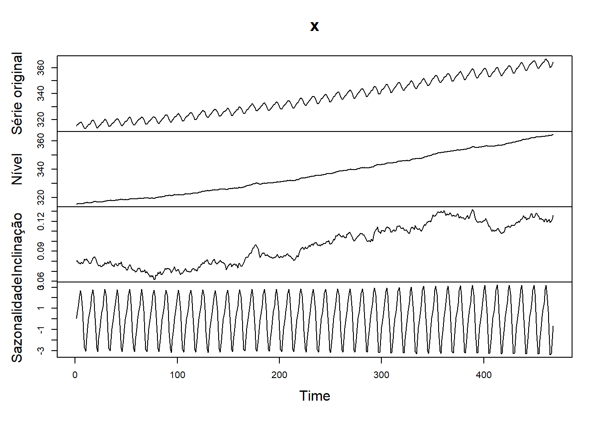
A análise dos resíduos, mostrada abaixo, mostra que o modelo está bem ajustado ao conjunto de dados.
res <- mod$residuals
ts.plot(res)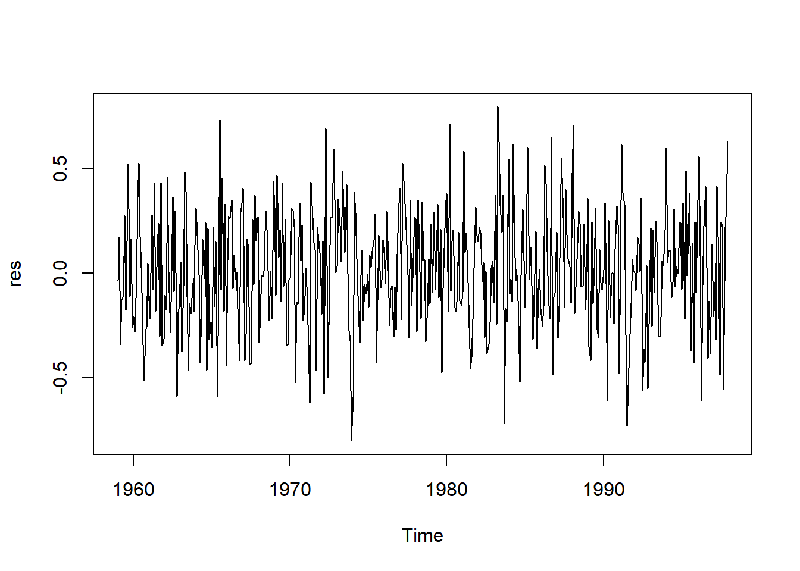
acf(res)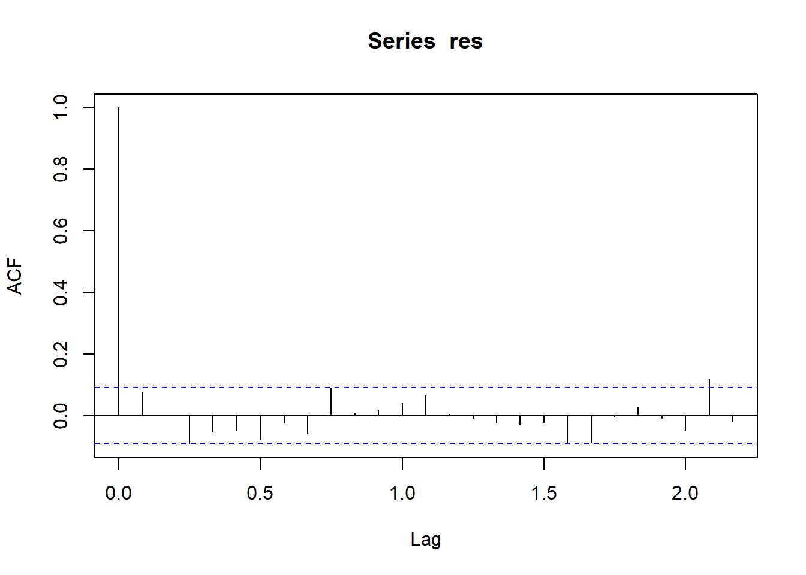
shapiro.test(res)
Shapiro-Wilk normality test
data: res
W = 0.99742, p-value = 0.6848Box.test(res)
Box-Pierce test
data: res
X-squared = 2.8016, df = 1, p-value = 0.09417Exercise 10.1 A série abaixo aparesenta o número mensal de nascidos vivos no Amazonas desde janeiro de 1994.
url <- 'https://docs.google.com/spreadsheets/d/1KvXQUmIj29_CYx14KfE6NjkLYajvnw7SEyFg5vSsfQM/edit?usp=sharing'
dados <- gsheet::gsheet2tbl(url)Ajuste um modelo de suavização exponencial adequado e analise suas componentes.
Em 2024 foram observados os nascimentos mensais abaixo. Verifique se o seu modelo consegue prever de modo adequado esse ano.
x <- c(5635,5065,5556,5287,5421,5219,5314,5666,5814,5851,5483,5639)Considere que a previsão um passo à frente é dada por, \[f_{t}(1)=\mu_{t-1}+\phi\tilde{b}_{t-1}=(1\;\;\phi)\left(\begin{array}{c}\tilde{\mu}_{t-1}\\ \tilde{b}_{t-1}\end{array}\right)\] onde \(\phi\in(0,1)\) tem o objetivo de amortecer a tendência dada pelo método de Holt, criando um previsão não linear. Com isso, teremos \[\begin{aligned} \mu_t &= \alpha x_t + (1-\alpha)(\mu_{t-1} + \phi\xi_{t-1})\\ \tilde{b}_t &= \beta(\tilde{\mu}_{t} - \tilde{\mu}_{t-1})+(1-\beta) \phi\tilde{b}_{t-1} \end{aligned}\] que por sua vez pode ser reescrita como \[\begin{aligned} \left(\begin{array}{c}\tilde{\mu}_t\\ \tilde{b}_t\end{array}\right) &= \left(\begin{array}{cc}1&\phi\\ 0 &\phi\end{array}\right)\left(\begin{array}{c}\tilde{\mu}_{t-1}\\ \tilde{b}_{t-1}\end{array}\right)+\left(\begin{array}{c}\alpha_t\\ \alpha\beta\end{array}\right)e_t\end{aligned}\] e, identificando a matriz acima com o termo \(\phi\) como \(G\), teremos que \[\hat{y}_{t}(h)=F'G^{h-1}\theta_{t}=\tilde{\mu}_t+(\phi+\cdots+\phi^h)\tilde{b}_t\] Abaixo, segue um esboço dessa função para alguns valores de \(\phi.\)
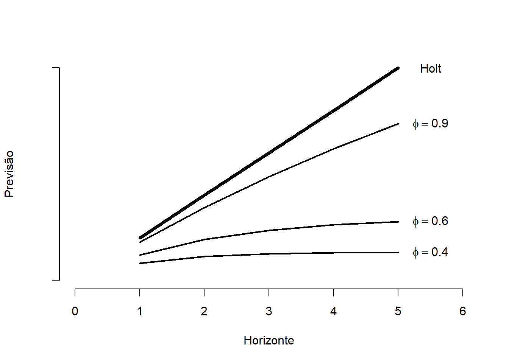
Suponha que \[\hat{y}_t(h)=\tilde{\mu}_t\tilde{b}_t^h\] o que implica que o logaritmo de \(y_t\) possui tendência localmente linear. Podemos adaptar o método de Holt, suavizando, como de costume, \(\tilde{\mu}_t\) por \[\begin{aligned}\tilde{\mu}_t&=\alpha y_t+(1-\alpha)\hat{y}_{t-1}(1)\\ &=\alpha\tilde{\mu}_{t}+(1-\alpha)\tilde{\mu}_{t-1}\tilde{b}_{t-1}\end{aligned}\]
Além disso, como o logaritmo da tendência é localmente linear, teremos que \[\log \tilde{\mu}_t-\log\tilde{\mu}_{t-1}\approx \log\tilde{b}_t\] ou ainda \[\tilde{b}_t\approx \frac{\tilde{\mu}_t}{\tilde{\mu}_{t-1}},\] logo, considerando que \(\tilde{b}_t\approx \tilde{b}_{t-1}\), podemos suavizar \(b_t\) do seguinte modo: \[\tilde{b}_t=\beta\frac{\tilde{\mu}_t}{\tilde{\mu}_{t-1}}+(1-\beta)\tilde{b}_{t-1}.\] Deste modo, o modelo com tendência multiplicativa é dado por \[\begin{aligned} \tilde{\mu}_t&=\alpha y_t+(1-\alpha)\tilde{\mu}_{t-1}\tilde{b}_{t-1}\\ \tilde{b}_t&=\beta\frac{\tilde{\mu}_t}{\tilde{\mu}_{t-1}}+(1-\beta)\tilde{b}_{t-1} \end{aligned}\] e, na forma de modelo de espaço estado,
\[\begin{aligned} y_t&=\tilde{\mu}_{t-1}\tilde{b}_{t-1}+e_t\\ \tilde{\mu}_t&=\tilde{\mu}_{t-1}\tilde{b}_{t-1}+\alpha e_t\\ \tilde{b}_t&=\tilde{b}_{t-1}+\alpha\beta\frac{e_t}{\tilde{\mu}_{t-1}} \end{aligned}\]
As estimativas de máxima verossimilhança para \(\tilde{\mu}_0,\alpha,\nu\) são obtidas via maximização da função de verossimilhança, conforme visto na introdução. Já a distribuição da função de previsão
Note que também existe uma versão deste modelo com o amortecedor. Supondo que \[\log \hat{y}_t(h)=\log(\tilde{\mu}_{t-1})+(\phi+\cdots+\phi^h)\log\tilde{b}_{t-1}\] teremos que a função de previsão com o amortecedor é dada por \[\hat{y}_t(h)=\tilde{\mu}_{t-1}\tilde{b}_{t-1}^{(\phi+\cdots+\phi^h)}\] que por sua vez possui a seguinte forma em espaço estado:
\[\begin{aligned} y_t&=\tilde{\mu}_{t-1}\tilde{b}_{t-1}^\phi+e_t\\ \tilde{\mu}_t&=\tilde{\mu}_{t-1}\tilde{b}_{t-1}^\phi+\alpha e_t\\ \tilde{b}_t&=\tilde{b}_{t-1}^\phi+\alpha\beta\frac{e_t}{\tilde{\mu}_{t-1}} \end{aligned}\]
teste